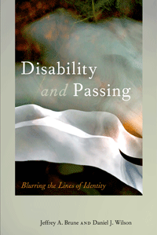

Why passing is a crucial concept in disability studies
Why passing is a crucial concept in disability studies


 Why passing is a crucial concept in disability studies
Why passing is a crucial concept in disability studies

|  |
Disability and PassingBlurring the Lines of Identityedited by Jeffrey A. Brune and Daniel J. Wilsonpaper EAN: 978-1-43990-980-5 (ISBN: 1-4399-0980-6) |
Contributor Dea H. Bolster, won the Disability History Association Award for Best Book Chapter, 2015
"Disability and Passing, cuts to the heart of disability identity, revealing as never before the centrality of passing to how disabled people think about themselves. Brune and Wilson�s collection demands a spot on everyone's bookshelf."
—Tobin Siebers, University of Michigan
Passing�an act usually associated with disguising race�also relates to disability. Whether a person classified as mentally ill struggles to suppress aberrant behavior to appear �normal� or a person intentionally takes on a disability identity to gain some advantage, passing is a pervasive and much-discussed phenomenon. Nevertheless, Disability and Passing is the first anthology to examine this issue.
The editors and contributors to this volume explore the intersections of disability, race, gender, and sexuality as these various aspects of identity influence each other and make identity fluid. They argue that the line between disability and normality is blurred, discussing disability as an individual identity and as a social category. And they discuss the role of stigma in decisions about whether or not to pass.
Focusing on the United States from the nineteenth century to the present, the essays in Disability and Passing speak to the complexity of individual decisions about passing and open the conversation for broader discussion.
Contributors include: Dea Boster, Allison Carey, Peta Cox, Kristen Harmon, David Linton, Michael Rembis, and the editors.
Excerpt available at www.temple.edu/tempress
"Disability and Passing is innovative in its use of disability to analyze both the acts and ideologies of passing from a wide range of theoretical, topical, and disciplinary perspectives. The essays are strong and smart�some are brilliant."
—Kim E. Nielsen, Professor of Disability Studies and History, University of Toledo, and author of A Disability History of the United States
"[A]n important book. It takes one of the most complex and misunderstood concepts in disabilities studies and serves it up in a number of contexts that make it more concrete and understandable to the common reader.... It provides both scholars and students with springboards to further research and a wealth of references to get them started.... Wilson and Brune are to be congratulated."
—Wordgathering: A Journal of Disability Poetry and Literature
"Collapsing normalization into passing may be the most important concept in this anthology, and the editors' selection of passing issues is on the mark.... The anthology wonderfully complicates and adds depth to the whole notion of people with disabilities passing. Previously, scholars have been stuck with awkward metaphors of disability passing as similar to passing as white or passing as straight. The complications of race, sexuality, or gender are not neglected here, and make for a rich palette of ideas to be unpacked and explored. Summing Up: Highly recommended."
—CHOICE
"Disability and Passing is the first anthology to examine the phenomenon of 'passing' among people with disabilities.... This collection offers a varied and thoughtful approach to understanding the challenges facing those with disabilities and the ways they manage a stigmatized identity through passing. A common theme in these essays is that passing strategies often place the burden of accommodating disabilities on the individuals themselves, rather than on the society that does not accept them. Disability and Passing places these challenges in historical and social context and encourages further research in this new area of study."
— Contemporary Sociology
"The essays collected in this volume on 'disability and passing' confront the historic and ongoing problem of social acceptance faced by persons in the United States who have lived with various forms of disability and yet choose in various ways to conceal their disability and 'pass' as able-bodied. In so doing, these scholars adapt the familiar idea of racial 'passing' and apply it to the myriad ways that persons with physical or mental impairments have passed as 'normal.'... The chapters include novel analyses of physical conditions not traditionally placed under the rubric of disability, such as mental illness, and they also address situations in which disabilities overlap or in which strong physical or mental competencies mask other disabilities that are partially or entirely concealed.... This collection queries traditional notions of disability in productive and provocative ways.... Taken together, these wide-ranging essays usefully expand the history and scope of disability's consequences in American culture."
—The Journal of American History
"Disability and Passing, a collection of interdisciplinary essays, provides one of the first major interventions into the subject of passing with regard to disability.... The diverse range of topics covered in this book is impressive. The eight essays together argue for the need to deeply contextualize and historicize passing through examinations of a range of disabilities and situations of passing.... The essays are approachable.... Disability and Passing provides a strong and accessible entry into this topic, and lays the groundwork for a wealth of scholarship for continued investigating questions of identity, passing, and disability."
—H-Net
"Granted the careful and sustained engagement� [the essays] introduce eight distinct and richly historicized modes of disability passing.... Disability and Passing is an opportune contribution to disability studies, particularly as these essays approach the social, cultural, and methodological issues raised by disability passing from the full breadth of the field�s interdisciplinary reach. One of the most striking features of Disability and Passing, in fact, is how well suited this topic is to the genre of the edited collection. Many of the book�s most illuminating insights lie in the surprising affinities that flash up among its otherwise disparate chapters."
—Bulletin of the History of Medicine
"[A] fascinating and eclectic collection of essays concerned with the social and cultural significance of passing within disability studies� . Spanning issues of race, gender, sexuality, and class, Brune and Wilson�s collection demonstrates the pervasive nature of passing, as a concern that affects all areas of identity politics, and makes for engaging and provocative reading."
—Journal of Literary & Cultural Disability Studies
"This book...provides a unique and nuanced understanding of the costs and potential benefits of passing as disabled and as non-disabled. This would be a useful resource for anyone drawn to thinking through and with disability beyond visible impairments.... The editors did a great job arranging the chapters in a cohesive way that allowed the reader to easily track themes such as coming out, risk, pride, shame, community, and identity, throughout the book thereby allowing one to develop a deeper understanding of some of the debates going on around passing in the field of Disability Studies."
—Canadian Journal of Disability Studies
Visit editor Jeff Brune's website.
Acknowledgments
1. Introduction • Jeffrey A. Brune and Daniel J. Wilson
2. Passing in the Shadow of FDR: Polio Survivors, Passing, and the Negotiation of Disability • Daniel J. Wilson
3. The Multiple Layers of Disability Passing in Life, Literature, and Public Discourse • Jeffrey A. Brune
4. The Menstrual Masquerade • David Linton
5. �I Made Up My Mind to Act Both Deaf and Dumb�: Displays of Disability and Slave Resistance in the Antebellum American South • Dea H. Boster
6. Passing as Sane, or How to Get People to Sit Next to You on the Bus • Peta Cox
7. Athlete First: A Note on Passing, Disability, and Sport • Michael A. Rembis
8. The Sociopolitical Contexts of Passing and Intellectual Disability • Allison C. Carey
9. Growing Up to Become Hearing: Dreams of Passing in Oral Deaf Education • Kristen C. Harmon
Contributors
Index
Jeffrey A. Brune is Assistant Professor of History at Gallaudet University. He is currently working on a monograph, Disability Stigma and the Modern American State.
Daniel J. Wilson is Professor of History at Muhlenberg College. He is author of several books, including Polio, and Living with Polio: The Epidemic and Its Survivors.
Disability Studies
Sociology
History
© 2015 Temple University. All Rights Reserved. This page: http://www.temple.edu/tempress/titles/2251_reg.html.